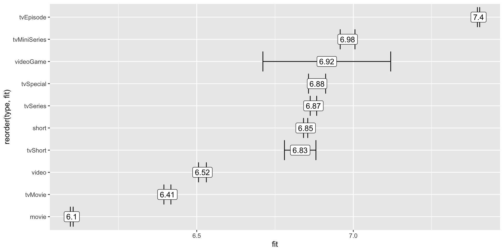
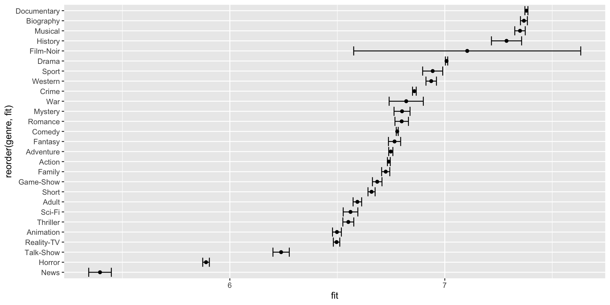

We will be working with the same data on movies and their rating.
What is the effect of type and genre on rating?
Call:
lm(formula = averageRating ~ genre + type, data = all_media)
Residuals:
Min 1Q Median 3Q Max
-6.9196 -0.6299 0.1017 0.7512 4.9461
Coefficients:
Estimate Std. Error t value Pr(>|t|)
(Intercept) 5.980290 0.004001 1494.848 < 2e-16 ***
genreAdult -0.146381 0.010808 -13.544 < 2e-16 ***
genreAdventure 0.009168 0.005931 1.546 0.122113
genreAnimation -0.241429 0.011104 -21.742 < 2e-16 ***
genreBiography 0.628527 0.008904 70.589 < 2e-16 ***
genreComedy 0.039077 0.004068 9.607 < 2e-16 ***
genreCrime 0.118833 0.005486 21.661 < 2e-16 ***
genreDocumentary 0.640106 0.004993 128.189 < 2e-16 ***
genreDrama 0.268465 0.004416 60.793 < 2e-16 ***
genreFamily -0.014477 0.010263 -1.411 0.158361
genreFantasy 0.026625 0.014903 1.786 0.074021 .
genreFilm-Noir 0.364710 0.269527 1.353 0.176009
genreGame-Show -0.054079 0.011768 -4.595 4.32e-06 ***
genreHistory 0.547596 0.035981 15.219 < 2e-16 ***
genreHorror -0.850390 0.008641 -98.410 < 2e-16 ***
genreMusical 0.610299 0.012929 47.205 < 2e-16 ***
genreMystery 0.061452 0.019323 3.180 0.001472 **
genreNews -1.343697 0.027049 -49.677 < 2e-16 ***
genreReality-TV -0.243151 0.008315 -29.243 < 2e-16 ***
genreRomance 0.059879 0.016413 3.648 0.000264 ***
genreSci-Fi -0.178261 0.017747 -10.045 < 2e-16 ***
genreShort -0.080398 0.009259 -8.683 < 2e-16 ***
genreSport 0.204031 0.024078 8.474 < 2e-16 ***
genreTalk-Show -0.501142 0.019687 -25.455 < 2e-16 ***
genreThriller -0.188485 0.013455 -14.008 < 2e-16 ***
genreWar 0.080935 0.040708 1.988 0.046792 *
genreWestern 0.197201 0.012857 15.338 < 2e-16 ***
typeshort 0.746905 0.004148 180.046 < 2e-16 ***
typetvEpisode 1.299175 0.003038 427.574 < 2e-16 ***
typetvMiniSeries 0.880923 0.012215 72.121 < 2e-16 ***
typetvMovie 0.305417 0.006107 50.015 < 2e-16 ***
typetvSeries 0.771852 0.005780 133.532 < 2e-16 ***
typetvShort 0.729547 0.025748 28.334 < 2e-16 ***
typetvSpecial 0.783455 0.014180 55.251 < 2e-16 ***
typevideo 0.417346 0.006803 61.346 < 2e-16 ***
typevideoGame 0.814507 0.104161 7.820 5.30e-15 ***
---
Signif. codes: 0 '***' 0.001 '**' 0.01 '*' 0.05 '.' 0.1 ' ' 1
Residual standard error: 1.205 on 1071553 degrees of freedom
Multiple R-squared: 0.1892, Adjusted R-squared: 0.1892
F-statistic: 7144 on 35 and 1071553 DF, p-value: < 2.2e-16What is the effect of type and genre on rating?
What is the effect of type and genre on rating?
What factors have an effect on rating?
model <- lm(averageRating ~ genre + type + year + runtime + numVotes,
data = all_media)
summary(model)
Call:
lm(formula = averageRating ~ genre + type + year + runtime +
numVotes, data = all_media)
Residuals:
Min 1Q Median 3Q Max
-6.9748 -0.6314 0.1068 0.7494 4.9290
Coefficients:
Estimate Std. Error t value Pr(>|t|)
(Intercept) -4.686e+00 1.112e-01 -42.132 < 2e-16 ***
genreAdult -1.078e-01 1.075e-02 -10.021 < 2e-16 ***
genreAdventure 3.851e-02 5.904e-03 6.522 6.94e-11 ***
genreAnimation -1.929e-01 1.105e-02 -17.455 < 2e-16 ***
genreBiography 5.944e-01 8.863e-03 67.066 < 2e-16 ***
genreComedy 5.881e-02 4.050e-03 14.521 < 2e-16 ***
genreCrime 1.309e-01 5.457e-03 23.989 < 2e-16 ***
genreDocumentary 6.187e-01 4.984e-03 124.144 < 2e-16 ***
genreDrama 2.760e-01 4.395e-03 62.803 < 2e-16 ***
genreFamily 3.520e-02 1.022e-02 3.445 0.000571 ***
genreFantasy 1.054e-02 1.482e-02 0.711 0.477009
genreFilm-Noir 6.351e-01 2.680e-01 2.370 0.017812 *
genreGame-Show -9.689e-02 1.172e-02 -8.270 < 2e-16 ***
genreHistory 5.363e-01 3.578e-02 14.988 < 2e-16 ***
genreHorror -9.003e-01 8.616e-03 -104.497 < 2e-16 ***
genreMusical 6.594e-01 1.286e-02 51.258 < 2e-16 ***
genreMystery 5.447e-02 1.922e-02 2.834 0.004593 **
genreNews -1.330e+00 2.690e-02 -49.453 < 2e-16 ***
genreReality-TV -2.832e-01 8.285e-03 -34.184 < 2e-16 ***
genreRomance 3.815e-02 1.633e-02 2.336 0.019471 *
genreSci-Fi -2.076e-01 1.765e-02 -11.757 < 2e-16 ***
genreShort -6.313e-02 9.209e-03 -6.854 7.16e-12 ***
genreSport 2.078e-01 2.394e-02 8.676 < 2e-16 ***
genreTalk-Show -5.269e-01 1.958e-02 -26.907 < 2e-16 ***
genreThriller -2.383e-01 1.340e-02 -17.784 < 2e-16 ***
genreWar 1.506e-01 4.049e-02 3.720 0.000199 ***
genreWestern 4.418e-01 1.302e-02 33.931 < 2e-16 ***
typeshort 7.434e-01 4.133e-03 179.875 < 2e-16 ***
typetvEpisode 1.255e+00 3.089e-03 406.313 < 2e-16 ***
typetvMiniSeries 8.255e-01 1.216e-02 67.868 < 2e-16 ***
typetvMovie 2.981e-01 6.078e-03 49.049 < 2e-16 ***
typetvSeries 7.263e-01 5.772e-03 125.845 < 2e-16 ***
typetvShort 7.175e-01 2.561e-02 28.022 < 2e-16 ***
typetvSpecial 7.242e-01 1.412e-02 51.289 < 2e-16 ***
typevideo 3.763e-01 6.788e-03 55.444 < 2e-16 ***
typevideoGame 7.620e-01 1.036e-01 7.357 1.89e-13 ***
year 5.335e-03 5.570e-05 95.780 < 2e-16 ***
runtime 3.691e-07 3.245e-07 1.137 0.255373
numVotes 2.798e-06 5.444e-08 51.392 < 2e-16 ***
---
Signif. codes: 0 '***' 0.001 '**' 0.01 '*' 0.05 '.' 0.1 ' ' 1
Residual standard error: 1.199 on 1071550 degrees of freedom
Multiple R-squared: 0.1982, Adjusted R-squared: 0.1982
F-statistic: 6972 on 38 and 1071550 DF, p-value: < 2.2e-16just_movies <- all_media |>
filter(type == "movie")
model_movie <- lm(averageRating ~ genre + year + numVotes + runtime,
data = just_movies)
summary(model_movie)
Call:
lm(formula = averageRating ~ genre + year + numVotes + runtime,
data = just_movies)
Residuals:
Min 1Q Median 3Q Max
-8.0407 -0.7211 0.0701 0.7729 5.2770
Coefficients:
Estimate Std. Error t value Pr(>|t|)
(Intercept) 5.913e+00 1.841e-01 32.112 < 2e-16 ***
genreAdult -1.857e-01 2.109e-02 -8.802 < 2e-16 ***
genreAdventure 2.703e-01 1.326e-02 20.385 < 2e-16 ***
genreAnimation 5.166e-01 4.352e-02 11.871 < 2e-16 ***
genreBiography 1.279e+00 1.465e-02 87.289 < 2e-16 ***
genreComedy 2.175e-01 8.610e-03 25.257 < 2e-16 ***
genreCrime 3.645e-01 1.237e-02 29.459 < 2e-16 ***
genreDocumentary 1.548e+00 9.429e-03 164.195 < 2e-16 ***
genreDrama 5.690e-01 8.278e-03 68.736 < 2e-16 ***
genreFamily 3.598e-01 2.602e-02 13.827 < 2e-16 ***
genreFantasy -7.852e-03 3.094e-02 -0.254 0.799679
genreFilm-Noir 6.699e-01 2.729e-01 2.455 0.014098 *
genreGame-Show 1.736e+00 1.220e+00 1.423 0.154711
genreHistory 1.056e+00 7.174e-02 14.721 < 2e-16 ***
genreHorror -9.357e-01 1.313e-02 -71.242 < 2e-16 ***
genreMusical 9.611e-01 3.010e-02 31.927 < 2e-16 ***
genreMystery 1.774e-01 3.240e-02 5.475 4.38e-08 ***
genreNews 1.492e+00 4.980e-01 2.995 0.002742 **
genreReality-TV 7.571e-01 2.393e-01 3.163 0.001560 **
genreRomance 3.628e-01 2.443e-02 14.853 < 2e-16 ***
genreSci-Fi -4.333e-01 3.689e-02 -11.743 < 2e-16 ***
genreSport 9.082e-01 8.592e-02 10.570 < 2e-16 ***
genreTalk-Show 9.112e-01 4.611e-01 1.976 0.048154 *
genreThriller -7.378e-02 1.989e-02 -3.709 0.000208 ***
genreWar 2.902e-01 5.721e-02 5.073 3.93e-07 ***
genreWestern 1.486e-01 2.672e-02 5.563 2.66e-08 ***
year -1.301e-04 9.217e-05 -1.411 0.158220
numVotes 2.943e-06 5.848e-08 50.327 < 2e-16 ***
runtime 9.125e-05 1.312e-05 6.956 3.50e-12 ***
---
Signif. codes: 0 '***' 0.001 '**' 0.01 '*' 0.05 '.' 0.1 ' ' 1
Residual standard error: 1.22 on 287315 degrees of freedom
Multiple R-squared: 0.1847, Adjusted R-squared: 0.1846
F-statistic: 2324 on 28 and 287315 DF, p-value: < 2.2e-16Download data on American Idol, set up your analysis environment, and answer the following question:
What factors have an effect on episode rating?